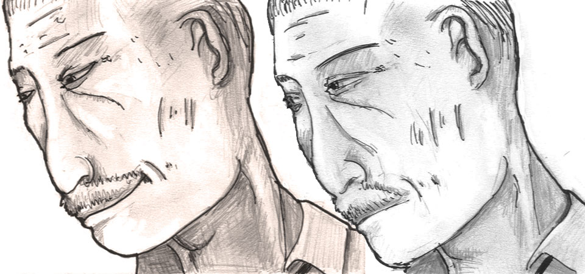

A BOLT, A BIRD;
AUGUST 21st, 2012
The IndieGoGo page is live and currently accepting your generous donations. I'm amazed how far the project has come. I'm already looking through actors! I'm headed back to New York this Sunday! The video game is functional! I'm in the middle of special effects testing and prop building. While I can I've been drawing more storyboard cards as I go, as you can see above. That's the most daunting task on the horizion - I'm not even sure if I'm halfway done and I already have about 90 cards. For those that are curious, I'm drawing the cards in layers - this way I can composite backgrounds and foregrounds together in photoshop (that's how I got the two-tone effect in the previz preview - by putting a filter on the foreground layers). There's an increased level of efficiency with this method, I don't have to draw the backgrounds over and over again. Diety help me if I had to do that. So yeah, if you pick the 'Hand-Drawn Storyboard Card' perk, you'll get one of those cards, mounted on a cardboard slate with 'A Bolt, A Bird' embossed on the lower register.
In the near future you can expect screenshots of the game and further video snippets of the pre-production process as it unravels. I won't be in the position to post all those wonderful things to my main page, but you can follow me or the project or like the facebook page and that shit will work itself out. We've got a fundraising party coming up, convieniently on Tesla's Birthday. I don't know how many of you are in the area.
Speaking of fundraising, if it isn't within your means to contribute to the project (Trust me, I understand. I'm not in a position to donate to any project.) you should totally print out a couple of these fliers (This one too if you're in NYC) and post them somewhere. Anywhere. Get the word out. Please.
|